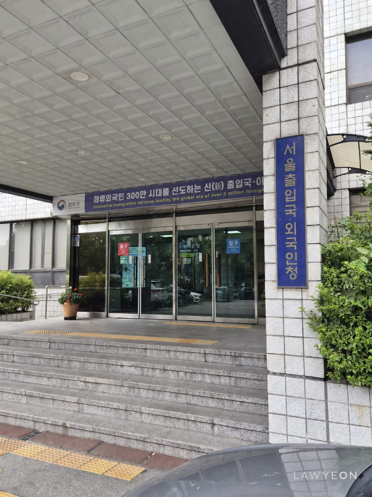

An F-6-1 marriage visa application involves an assessment of the genuineness of the marriage, the Korean spouse's income and housing, the couple's ability to communicate, and their health and criminal records. The usual requirements differ depending on whether the foreign spouse is from a country covered by the International Marriage Guidance Program. Where the couple has a child together, exemptions from several requirements and supporting documents apply.
| Applicant's circumstances | Main criteria |
|---|---|
| Spouse from a country covered by the International Marriage Guidance Program | In addition to the basic requirements, the Korean spouse's completion of the program is checked. Exemptions from program attendance based on residence and relationship history, pregnancy, childbirth, or other grounds are also linked to exemptions from health and criminal-record documents. |
| Spouse from a country not covered by the International Marriage Guidance Program | Program attendance is not required, but health and criminal-record documents must generally be submitted. Exemptions from submitting these documents are assessed on separate grounds. |
| Couple with a child born to them | The income and communication requirements and the requirement to submit a criminal record certificate are waived. Evidence of the marriage, the relationship with the child, housing, and other relevant matters is still required. |
For couples whose applications are complicated by an overseas criminal record or a gap in Korean income, the question extends beyond which exemption may apply. They also need a way to live together in Korea until they qualify for it. Eligibility to apply for an F-6 visa after their child's birth does not itself provide a basis for staying in Korea before the birth.
Living together in Korea before the birth of a child
A couple expecting a child who cannot meet the income or communication requirements may consider applying for the marriage visa after the birth. Even where pregnancy provides humanitarian grounds for waiving a criminal record certificate, pregnancy alone does not waive the income and communication requirements. If the couple needs to live in Korea before the birth, the foreign spouse must secure a lawful status covering that period.
The first question is whether the foreign spouse can already apply for an F-6 visa. If the income and communication requirements are met or can be waived on other grounds, waiting until childbirth may be unnecessary. Even where an in-country change from a short-term entry status is restricted, a change may be approved following review if pregnancy, childbirth, or other circumstances make it unavoidable. The assessment therefore includes the circumstances preventing the couple from leaving Korea to obtain a visa abroad.
If the couple needs the exemptions available after childbirth, potential visas for the intervening period depend on the foreign spouse's education and experience, employment prospects in Korea, genuine business plans, and current immigration status. An overseas criminal record also requires checking the criminal record certificate requirements and restrictions applicable to each alternative visa, so that the selected route is one the applicant can actually pursue.
For example, a person preparing to establish a technology startup in Korea who meets the relevant education, startup-training, and other requirements may plan to remain under the D-10-2 technology startup preparation status and change to an F-6 marriage visa after the child's birth. If the business becomes operational before then and meets the separate D-8-4 technology startup requirements, an intermediate change to D-8-4 may also be considered. Each stage depends on genuine startup preparation and business activity.
A lawyer coordinates the timing of the initial visa, any extensions or intermediate changes of status, and the marriage visa application after childbirth. The schedule must allow for registering the birth and obtaining proof of the family relationship, rather than ending at the expected delivery date. If the authorized stay expires before those steps can be completed, an extension or a change to the next status must be prepared first. Where an extension of the existing status covers the necessary period, no additional visa change is needed.

When standard documents do not sufficiently support an application
Unusual circumstances involving criminal records or family relationships, or difficulty establishing the necessary facts through documents issued overseas, may call for a lawyer's written submission accompanied by additional evidence. The submission sets out how the relevant circumstances arose, the exemptions or exceptions that may apply, and the evidence supporting their application.
For an exemption based on the couple's shared life abroad, records showing that each spouse was present in a foreign country may not sufficiently establish how long they lived together. The lawyer examines their addresses and residential history to obtain evidence of cohabitation and explains any discrepancies in the dates or information recorded in the documents.
Advance discussions with the responsible office establish what further facts the reviewing officer needs to confirm and what alternative or supplementary evidence can be submitted. If an overseas authority does not issue a certificate in the same format as a Korean document, the lawyer discusses which records can establish the relevant facts and prepares the evidence to meet the confirmed submission requirements. These materials accompany the written submission explaining the client's particular circumstances and the grounds for applying the exception.
Law Firm Lawyeon Immigration Law Center provides legal services specialized in the integrated handling of Korean immigration and visa matters together with criminal cases and immigration-violation reviews, built on extensive case experience, professional networks, and practical knowledge.
The Center was founded through the organic collaboration of attorneys Junwoo Min, Dohyun Nam, and Seungchul Kim — criminal-law specialists who have advised across a wide range of immigration matters — with Senior Advisor Taemin Ahn, who has served at the Seoul Global Center, as a center head at the Ministry of Justice's Global Start-up Immigration Center, and as a member of the Foreign Workers' Rights Protection Council of the Seoul Regional Employment and Labor Administration. It is Law Firm Lawyeon's dedicated center for immigration practice.
In particular, for departure orders and entry-ban dispositions that follow a final criminal conviction, the Center presents effective solutions through an integrated strategy spanning criminal defense, objections to the disposition, and applications to lift the entry ban, and it supports stable business activity in Korea by managing many clients' immigration risk.